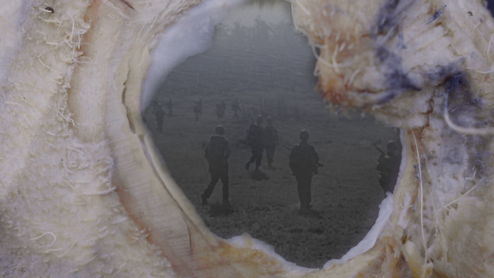

Nowhere Near (96 minutes, 2023)
A poetic essay film through the lens of an undocumented immigrant becoming disillusioned by their future in the United States and deciding to return to an estranged homeland. Through fragmented streams of consciousness, Nowhere Near tracks down the origin of a family curse backtracking through the generational harm of the post 9/11 era, the US occupation of the Philippines and the spiritual conquest of the Spanish empire. The film is a years-long diary towards understanding the root of their migration to the United States, though ultimately this odyssey deviates far from the expected course.
IFFR: Hubert Bals Fund 2019
Open City Documentary Festival: Assembly Lab grant
Film Comment Best Undistributed Films of 2023
CNN Philippines: The best Filipino films of 2023
Society of Filipino Film Reviewers: Best Documentary
Select exhibitions
TIFF Toronto International Film Festival 2023
NYFF New York Film Festival 2023
SGIFF Singapore International Film Festival 2023
REDCAT, Los Angeles 2023
Yamagata International Documentary Film Festival 2023
RIDM, Montreal 2023
DOK- Leipzig 2023
SXSW, Sydney 2023
Walker Art Center, Minneapolis 2024
Western Front, Vancouver 2024
“Through an abstract odyssey into personal history à la Chris Marker’s Sans Soleil, Revereza works in a range of mediums to express the borderless aesthetic of statelessness. What results is an investigative documentary layered with the narration of his own novel, floating into the mysteries of psychogeographical disconnect with superimposed images and submerged family portraits.”
—Dylan Foley, Filmmaker Magazine, Exorcising The Curse of The U.S.
“But the dream to which Bolaño refers is equally alive in the way Revereza sublimates his experiences into cinema. Distances dissolve in the elegant superimposition of one place onto another. Time is elided and expanded through the precise use of edits. Languages blend together through the development of “loan words,” heard in Tagalog’s incorporation of Spanish. In its international scope, extensive timeline, and seductive lyricism, Nowhere Near takes the arresting intimacy of Revereza’s earlier feature, the diaristic railway travelogue No Data Plan (2019), to new, rapturous places.”
—Andrew Northorp, IDA, A Dedicated Space: Open City 2023
“Nowhere Near is a spiritual, visceral journey that parses metaphysical spaces and reality to accentuate the freedom of traveling and movement in the DACA era and a remarkable final chapter of Revereza’s early artistic phase.”
“The film doesn’t proceed by argument so much as it unfurls a series of fragmented observations which orbit one another and eventually form an impressionistic whole.”
“The relationship between Revereza and his Lola testifies to the significance of intergenerational memory in diaspora.”
—Sanoja Bhaumik, Screen Slate, Nowhere Near
“How does one map a family history long uprooted? How does one find their roots in a country fractured by more than three centuries of colonization, occupation, and imperialism?”